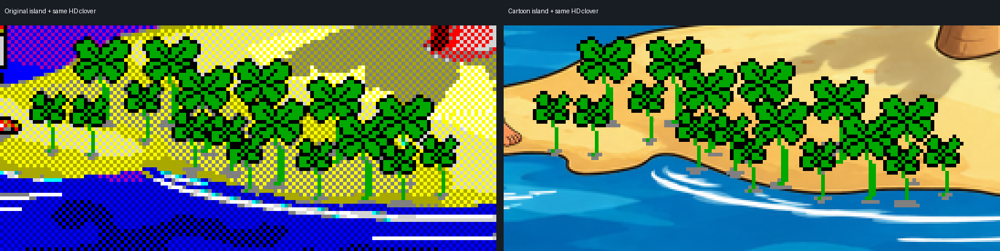
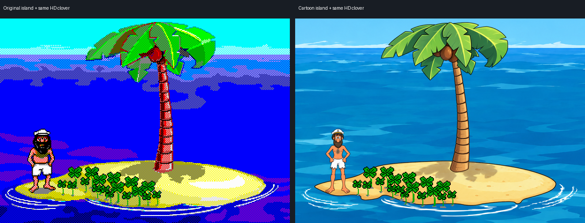

The Cartoon shoreline is missing some ground
The same clover artwork is drawn at the same position on both sides. The original wave sprites add sand beyond the base island. Our Cartoon waves retained the foam but omitted that sand, leaving several clover roots over water.
Left: original scenery artwork rendered by our port, using a diagnostic palette. Right: current Cartoon scenery. Judge the shape and contact with the ground; this is not a color comparison with the original executable.
Clover contact, enlarged equally

Whole island, matched crop

| Measurement in this high-tide phase | Result |
|---|---|
| Ground retreat at sampled clover columns | Up to 13 rendered pixels |
| Original stem endpoints below the measured sand | Original: 1 of 15; Cartoon: 6 of 15 |
| Base island alone, opaque mask area | About 2.5% smaller |
The measured sand boundary excludes foam and some border pixels. The one original endpoint outside it is two rendered pixels below the boundary. These counts describe this captured phase, not every animation state.
Recommended next step
Restore the original combined ground footprint in the Cartoon shoreline and wave layers, keeping the original placement. Check every wave phase, then recheck the decorations at their original anchors. The current smaller, raised seasonal drafts were compensating for the missing ground.
See the seasonal drafts and approved lightly rotting pumpkin · Evidence and reproduction notes